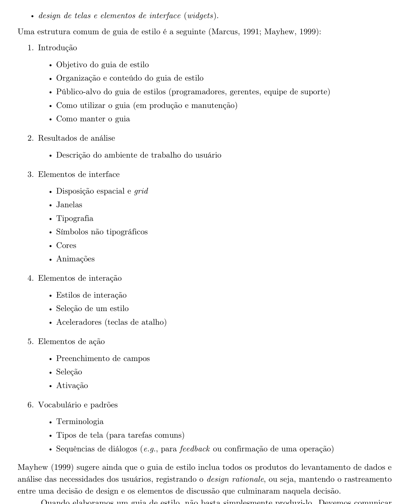
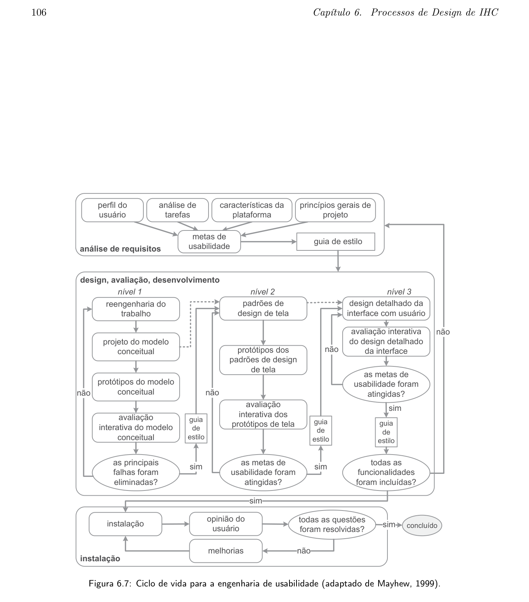
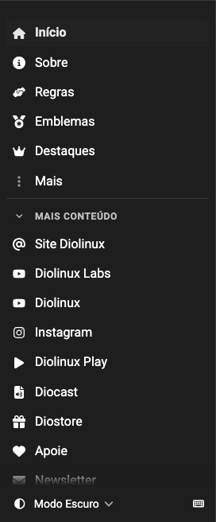
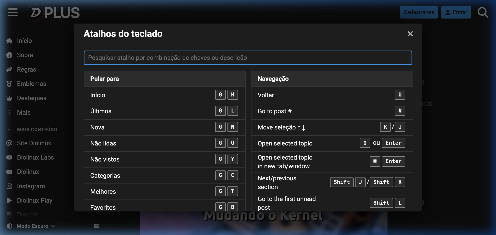
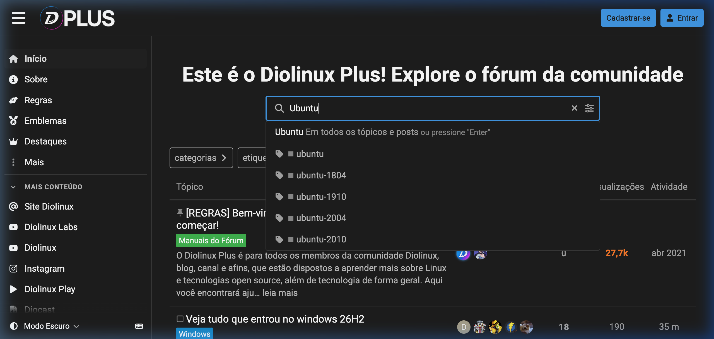
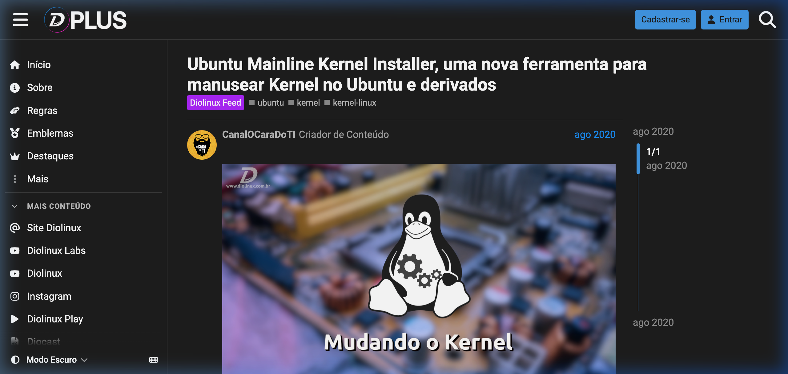

Guia de Estilo: Elementos de Interface, Tipografia e Cores — Diolinux Plus
Documento Consolidado em PDF para Download Acadêmico
Em conformidade com as diretrizes metodológicas e critérios da rubrica de avaliação de IHC (Sales, 2026), o documento consolidado do Guia de Estilo oficial do Fórum Diolinux Plus, formatado com cabeçalho institucional, paginação dinâmica e especificações ergonômicas completas, encontra-se disponível para consulta e download:
GuiaDeEstiloDiolinuxPlusGrupo08.pdf
Tabela de Contribuição e Uso de IA Generativa
A Tabela 1 apresenta a distribuição de responsabilidades, autores, revisores e ferramentas de Inteligência Artificial Generativa empregadas na elaboração e expansão deste documento.
Tabela 1 — Tabela de Contribuição e Uso de IA Generativa
| Integrante | Contribuição no Artefato | Data | Revisor | Ferramenta de IA Utilizada | Propósito e Escopo do Uso de IA |
|---|---|---|---|---|---|
| Edvaldo Soares Brasileiro Filho | Elaboração inicial do documento, estruturação conceitual de seções e levantamento dos componentes visuais | 05/10/2026 | Vinicius Silva Araruna | Gemini | Formatação de tabelas, adequação sintática em Markdown e suporte estilístico. |
| Gustavo Antonio Rodrigues e Silva | Expansão substancial das 6 seções canônicas de Mayhew (1999), validação de contraste WCAG 2.1, catalogação ergonômica de atalhos e ações, elaboração da lista de verificação e compilação em PDF (#45) | 21/10/2026 | Vinicius Silva Araruna | Google Gemini (LLM) | Apoio na estruturação formal da lista de verificação, cálculo de razões de contraste WCAG 2.1 e automação da compilação gráfica via ReportLab. |
| Vinicius Silva Araruna | Revisão por pares, validação do rigor metodológico de IHC, checagem da rastreabilidade com tarefas HTA/GOMS e personas | 21/10/2026 | Edvaldo Soares | — | Revisão humana e auditoria analítica das diretrizes de IHC. |
Fonte: Grupo 08, 2026.
Fundamentação Teórica: O Guia de Estilo no Ciclo de Vida de Mayhew
Na Engenharia de Usabilidade e na disciplina de Interação Humano-Computador, o Guia de Estilo (Style Guide) constitui um artefato prescritivo de extrema relevância técnica. Conforme lecionam Barbosa e Silva (2010; 2021) e Mayhew (1999), o guia tem o propósito fundamental de registrar e comunicar decisões de design coordenadas, garantindo a consistência visual, comportamental e operacional entre múltiplos módulos, telas e interações de uma aplicação interativa.
Segundo Deborah Mayhew (1999), o Guia de Estilo atua na transição crítica entre a fase de Análise de Requisitos e as fases de Design, Avaliação e Desenvolvimento (Nível 1, Nível 2 e Nível 3). Ele consolida os princípios de IHC estabelecidos, os perfis de usuários mapeados e as características da plataforma tecnológica, transformando requisitos abstratos em padrões práticos de interface e diretrizes ergonômicas tangíveis.
A Figura 1 reproduz a fundamentação teórica extraída do livro de Barbosa e Silva (2010, p. 242), a qual estabelece formalmente a estrutura canônica em seis grandes seções adotada na literatura de IHC e recomendada por Marcus (1991) e Mayhew (1999).

Figura 1 — Estrutura Canônica de um Guia de Estilo de IHC segundo Marcus (1991) e Mayhew (1999).
Fonte: BARBOSA, Simone Diniz Junqueira; SILVA, Bruno Santana da. Interação Humano-Computador. Rio de Janeiro: Elsevier, 2010, p. 242.
Complementarmente, a Figura 2 contextualiza o posicionamento do Guia de Estilo dentro do Ciclo de Vida da Engenharia de Usabilidade de Mayhew (1999), demonstrando que o artefato é alimentado pelas metas de usabilidade, análise de tarefas e princípios de projeto, servindo como base norteadora para protótipos de baixa, média e alta fidelidade.

Figura 2 — Ciclo de Vida da Engenharia de Usabilidade adaptado de Mayhew (1999).
Fonte: Adaptado de Mayhew (1999) por Barbosa e Silva (2010, p. 106).
Autor do Bloco Conceitual Teórico: Edvaldo Soares Brasileiro Filho
Revisores do Bloco Conceitual: Gustavo Antonio Rodrigues e Silva e Vinicius Silva Araruna
1. Introdução
1.1 Objetivo do Guia de Estilo
O objetivo deste documento é consolidar e normatizar os padrões ergonômicos, visuais e funcionais adotados no Fórum Diolinux Plus (construído sob a plataforma de código aberto Discourse). Este guia visa assegurar que novas funcionalidades, telas, componentes de software e eventuais redesigns mantenham alta usabilidade, conformidade rigorosa com os critérios internacionais de acessibilidade digital (WCAG 2.1) e estrita fidelidade à identidade comunitária do ecossistema Diolinux.
1.2 Organização e Estrutura do Documento
Em estrita conformidade com a literatura canônica de IHC (Marcus, 1991; Mayhew, 1999; Barbosa e Silva, 2010), o guia organiza-se nas seguintes seções: 1. Introdução: objetivos, organização, público-alvo, diretrizes de uso e política de governança/manutenção; 2. Resultados de Análise: contextualização do ambiente de trabalho, relação com as personas do projeto e rastreabilidade com a Análise de Tarefas (HTA e GOMS/KLM); 3. Elementos de Interface: grid modular responsivo, janelas modais, tipografia, paleta de cores com cálculo formal de contraste WCAG 2.1 e iconografia; 4. Elementos de Interação: estilos interativos, navegação espacial, breadcrumbs, carregamento dinâmico (scroll infinito), feedback de sistema e tabela de atalhos de teclado do Discourse; 5. Elementos de Ação: estados ergonômicos de botões, formulários e preenchimento, ações sociais e modais de prevenção contra erros destrutivos; 6. Vocabulário e Padrões: glossário terminológico, níveis de confiança (Trust Levels TL0 a TL4), layouts padronizados e diretrizes de tom de voz.
1.3 Público-Alvo
Este guia destina-se formalmente aos seguintes grupos de atores: * Desenvolvedores de Software e Web Designers: para a implementação de novas extensões, temas personalizados, componentes de interface e regras de estilização CSS/Ember.js; * Moderadores e Administradores da Comunidade: para orientar a padronização na categorização de tópicos, criação de banners informativos e curadoria do conteúdo; * Engenheiros de Usabilidade e Avaliadores de IHC: como instrumento de referência para inspeções heurísticas, condução de testes de usabilidade e avaliação de acessibilidade; * Integrantes da Equipe do Grupo 08: como artefato central para balizar o desenvolvimento dos protótipos de papel e protótipos de alta fidelidade das etapas subsequentes.
1.4 Como Utilizar o Guia (em Produção e Manutenção)
- Durante a Concepção e Design: designers e engenheiros devem consultar previamente as tabelas de cores, tipografia, espaçamento e componentes antes de esboçar novos fluxos ou telas;
- Durante o Desenvolvimento: os desenvolvedores devem utilizar exclusivamente os tokens e classes CSS documentados, preservando as proporções de contraste e dimensões interativas;
- Durante a Avaliação Heurística e Testes: avaliadores devem confrontar as interfaces produzidas com os parâmetros deste guia, identificando discrepâncias como violações de consistência.
1.5 Como Manter o Guia (Governança e Política de Atualização)
O Guia de Estilo é um artefato vivo e evolutivo. Quaisquer propostas de alteração de cores, adição de novos componentes ou modificação de comportamentos interativos devem seguir o seguinte fluxo de governança: 1. Submissão formal de uma Issue detalhando a motivação ergonômica da alteração; 2. Análise de impacto pelo time de IHC, avaliando conformidade com a WCAG 2.1 e ausência de regressões ergonômicas; 3. Aprovação por revisão por pares e registro obrigatório no Histórico de Versões do artefato.
2. Resultados de Análise
O Guia de Estilo não resulta de preferências estéticas isoladas; ele é a materialização direta dos requisitos elicitados junto aos usuários reais do Fórum Diolinux Plus, conforme preconiza Mayhew (1999).
2.1 Descrição do Ambiente de Trabalho do Usuário
Os usuários do Diolinux Plus interagem com a plataforma predominantemente em computadores desktop e notebooks operando distribuições Linux (Ubuntu, Linux Mint, Fedora, Arch Linux), além de sistemas Windows e macOS, e em dispositivos móveis (Android e iOS). As sessões de uso ocorrem tipicamente em duas situações principais: * Resolução Emergencial de Falhas: sessões concentradas em que o usuário enfrenta problemas técnicos em sua estação de trabalho (ex.: quebra de drivers de vídeo, falha de rede Wi-Fi, erros de compilação) e busca soluções imediatas; * Estudo e Participação Comunitária: sessões prolongadas de leitura, troca de experiências, publicação de artigos técnicos e acompanhamento de novidades sobre código aberto e tecnologia.
Por envolver longos períodos de leitura em telas com diferentes resoluções e calibragens de brilho, a comunidade do Diolinux Plus adotou historicamente uma base visual predominantemente em Modo Escuro (Dark Mode), reduzindo a fadiga ocular e aumentando o conforto visual.
2.2 Relação com as Personas do Projeto
As especificações de estilo atendem de forma balanceada às três personas mapeadas para o projeto:
- Lucas Mendonça (Persona Primária — Entusiasta DevOps):
- Necessidades no Guia: suporte avançado a blocos de código com destaque sintático e contraste elevado, tags semânticas para filtrar rapidamente tópicos por tecnologias específicas (ex.: Docker, Podman, Kernel) e aceleradores de produtividade via atalhos de teclado do Discourse para operar o fórum sem descolar as mãos do teclado.
- Carlos Eduardo (Persona Secundária — Iniciante em Migração):
- Necessidades no Guia: interface limpa, ausência de poluição visual, alta legibilidade com fontes bem espaçadas, modais com mensagens didáticas e amigáveis (sem jargões técnicos herméticos), botões de ação evidentes com rótulos compreensíveis ("Responder", "Salvar") e diálogos bloqueadores que previnam a perda involuntária de postagens ou alterações acidentais.
- Mariana Ribeiro (Persona Secundária — Pesquisadora Autônoma):
- Necessidades no Guia: caixa de pesquisa preditiva de alta resposta visual com filtros claros por categoria e relevância, sinalizadores visuais inequívocos para postagens com Solução Aceita (Solved) em verde vibrante, e barra lateral estruturada para navegação eficiente sem cliques redundantes.
2.3 Rastreabilidade com a Análise de Tarefas (HTA e GOMS/KLM)
O catálogo de componentes e regras de interação foi calibrado diretamente a partir das três tarefas essenciais analisadas pelo grupo:
- Tarefa 1: Criação e Publicação de Tópico com Tags e Markdown (HTA/KLM):
- O editor de texto de tela dividida (side-by-side split screen) com pré-visualização em tempo real e barra de ferramentas rica reduz os operadores mentais (M) e motores (K, P) modelados no KLM. O salvamento contínuo em segundo plano (rascunho automático) mitiga o estresse cognitivo do usuário.
- Tarefa 2: Criação e Divulgação de Eventos Presenciais da Comunidade (HTA/CTT):
- Formulários modulares com divisão estruturada por etapas, seleção de localização com preview no mapa interativo e feedback imediato de quórum mínimo e capacidade eliminam barreiras operacionais, acolhendo o organizador e participantes (Carlos Eduardo) com clareza nos requisitos operacionais.
- Tarefa 3: Busca Avançada e Filtros de Categoria (HTA/CMN-GOMS):
- A caixa de busca com instant overlay e atalho global rápido (
/) permite disparar a pesquisa em apenas uma operação motora, oferecendo filtros imediatos de categoria, data e status de solução.
3. Elementos de Interface
3.1 Disposição Espacial, Grid Modular e Layout Responsivo
A interface do Fórum Diolinux Plus utiliza um sistema de grid modular fluido baseado em múltiplos de 4px e 8px para paddings, margens e alturas de linha, proporcionando consistência geométrica e ritmo vertical.
- Container Central de Conteúdo: largura máxima de
1110pxcentralizada na viewport, garantindo que o comprimento das linhas de texto permaneça na faixa ergonômica ideal de 65 a 85 caracteres por linha para leitura contínua. - Barra Lateral Modular (Sidebar): coluna fixa à esquerda com largura entre
220pxe260px, agrupando atalhos rápidos para tópicos recentes, categorias principais e mensagens diretas. Em telas menores que1024px, a barra lateral colapsa automaticamente em um menu deslizante lateral (drawer). - Breakpoints de Responsividade:
- Mobile:
< 768px(layout de coluna única, navegação inferior/drawer, modais ocupando tela cheia); - Tablet:
768pxa1023px(grid adaptativo, barra lateral colapsada por padrão); - Desktop:
1024pxa1440px(grid de duas colunas com sidebar fixa e container principal); - Wide / High-Res:
> 1440px(layout centralizado com margens laterais automáticas para evitar estiramento visual).
A Figura 3 exibe a organização espacial da barra lateral de navegação e atalhos rápidos do Fórum Diolinux Plus.

Figura 3 — Barra Lateral Modular com Categorias e Atalhos do Diolinux Plus.
Fonte: Fórum Diolinux Plus, 2026.
Complementarmente, a Figura 4 ilustra a disposição panorâmica da listagem de tópicos e cabeçalho na tela principal da plataforma.
Figura 4 — Visão Geral do Layout da Página Principal do Diolinux Plus.
Fonte: Fórum Diolinux Plus, 2026.
3.2 Janelas e Modais
Os modais são empregados exclusivamente para tarefas focadas e diálogos que demandam atenção concentrada do usuário.
* Mecanismo de Exibição: sobreposição de uma camada de fundo escurecida e semitransparente (backdrop em rgba(0, 0, 0, 0.7) com backdrop-filter: blur(2px)), isolando a janela do conteúdo de fundo.
* Estrutura Padronizada:
1. Cabeçalho do Modal: título descritivo em H3 e botão de fechamento rápido com ícone x no canto superior direito;
2. Corpo do Modal: área de conteúdo com rolagem vertical independente quando o conteúdo ultrapassa 70vh;
3. Rodapé de Ações: botões alinhados à esquerda (ações primárias) e à direita (botão de cancelamento), com foco automático atribuído à ação mais segura.
* Fechamento e Acessibilidade: todo modal deve ser fechado por três vias canônicas: acionamento da tecla Esc, clique fora da caixa do diálogo (click outside) ou clique no botão x.
3.3 Paleta de Cores e Conformidade de Contraste WCAG 2.1
A paleta de cores do Diolinux Plus fundamenta-se no Dark Mode oficial, equilibrando elegância visual e contraste funcional rigoroso. A Tabela 2 detalha os tokens de cores de superfície e tipografia, acompanhados do cálculo formal da razão de contraste em conformidade com as diretrizes da WCAG 2.1 (Critérios 1.4.3 para Contraste Mínimo e 1.4.6 para Contraste Aprimorado).
Tabela 2 — Paleta de Cores de Superfície e Tipografia com Razão de Contraste WCAG 2.1
| Token de Design | Código Hexadecimal | Descrição e Finalidade Ergonômica | Razão de Contraste Medida | Conformidade WCAG 2.1 |
|---|---|---|---|---|
--primary / Text High |
#F5F6F8 |
Texto principal, títulos e ícones de alto destaque | 15.2:1 (sobre fundo #16171B)13.8:1 (sobre card #1E1F24) |
AAA (Texto Normal e Grande) |
--primary-medium / Text Muted |
#A0A5B1 |
Metadados, datas, contadores de respostas e subtítulos secundários | 6.4:1 (sobre fundo #16171B)5.8:1 (sobre card #1E1F24) |
AA (Texto Normal) |
--tertiary / Accent Primary |
#0084FF |
Links navegáveis, botões primários e bordas de foco ativo | 5.6:1 (sobre fundo #16171B)4.6:1 (com texto #FFFFFF) |
AA (Texto Normal e UI) |
--secondary / BG Base |
#16171B |
Fundo principal da página e áreas de menor destaque visual | — | Base de Fundo |
--header_background / BG Card |
#1E1F24 |
Superfície do cabeçalho superior, cards de post e janelas modais | — | Base de Superfície |
--border-color |
#2D2F36 |
Divisores sutis, linhas de tabela e contornos de caixas de texto | 3.2:1 (contraste de componentes de UI) | AA (Critério 1.4.11 UI) |
Fonte: Elaborada pelos autores com base nas medições de contraste do Fórum Diolinux Plus, 2026.
A Tabela 3 descreve as cores semânticas destinadas ao feedback operacional e comunicacional da plataforma.
Tabela 3 — Paleta de Cores Semânticas de Feedback
| Categoria Semântica | Token / Código Hex | Finalidade de Uso na Interface | Exemplo de Aplicação Prática |
|---|---|---|---|
| Sucesso (Success) | #2ECC71 |
Confirmação de tarefas bem-sucedidas, indicação de tópicos resolvidos e badges de status aprovado | Marcador de "Solução Aceita" em discussões técnicas |
| Atenção (Warning) | #E67E22 |
Avisos de moderação, notificações pendentes, tópicos arquivados ou mensagens obsoletas | Alerta de postagem antiga sem atividade há mais de 1 ano |
| Erro / Perigo (Danger) | #E74C3C |
Operações destrutivas irreversíveis, mensagens de erro em campos e sinalizações (flags) | Botão "Excluir Postagem" e mensagens de validação inválida |
| Informativo / Staff | #3498DB |
Avisos globais fixados (pinned), mensagens institucionais e anúncios oficiais da equipe Diolinux | Banner de comunicado oficial no topo da página |
Fonte: Elaborada pelos autores, 2026.
3.4 Escala Tipográfica e Hierarquia
A tipografia foi selecionada para garantir máxima legibilidade em longos textos técnicos, comandos de terminal e telas com alta densidade de informação.
Famílias Tipográficas (Font Stack)
- Interface Geral e Texto Corrido:
system-ui, -apple-system, BlinkMacSystemFont, "Segoe UI", Roboto, "Helvetica Neue", Arial, sans-serif
Justificativa: aproveita as fontes nativas renderizadas pelo sistema operacional do usuário, eliminando tempo de carregamento de fontes remotas (web fonts) e garantindo familiaridade ergonômica. - Blocos de Código e Terminal (Monospace):
ui-monospace, "SFMono-Regular", Consolas, "Liberation Mono", Menlo, Courier, monospace
Justificativa: assegura largura fixa para todos os caracteres, fundamental para alinhamento de códigos Bash, Python e configurações de arquivos Linux.
A Tabela 4 documenta a escala tipográfica modular padronizada.
Tabela 4 — Escala Tipográfica Padronizada
| Nível / Tag | Tamanho de Fonte | Altura de Linha (Line Height) | Peso (Font Weight) | Caso de Uso Ergonômico |
|---|---|---|---|---|
| H1 (Título Principal) | 24px (1.50rem) |
32px (1.33) |
Bold (700) | Título de tópico aberto e cabeçalho de grandes seções |
| H2 (Subtítulo de Seção) | 20px (1.25rem) |
28px (1.40) |
Semi-Bold (600) | Títulos intermediários dentro do corpo das postagens |
| H3 (Cabeçalho de Card/Modal) | 17px (1.06rem) |
24px (1.41) |
Semi-Bold (600) | Nomes de categorias na sidebar e títulos de modais |
| Body (Texto Padrão) | 15px (0.94rem) |
22px (1.46) |
Regular (400) | Parágrafos de discussões, posts e mensagens de texto |
| Small / Metadados | 13px (0.81rem) |
18px (1.38) |
Regular (400) / Medium (500) | Nomes de tags, contadores de visualizações e timestamps |
| Code / Inline Code | 13px (0.81rem) |
19px (1.45) |
Regular (400) | Trechos de comando em terminal, logs e código-fonte |
Fonte: Elaborada pelos autores, 2026.
3.5 Símbolos Não Tipográficos, Badges e Iconografia
- Biblioteca de Ícones Oficial: conjunto vetorial Font Awesome Free, provido nativamente pelo ecossistema Discourse, assegurando consistência semântica e escalabilidade SVG sem degradação visual.
- Grid e Dimensões de Ícones:
16x16px: ícones inline acompanhando textos, botões de ação secundária e metadados de tópicos;20x20px: ícones de navegação principal no cabeçalho (Lupa de busca, Sino de notificações, Menu hamburguer).- Badges de Categoria: componentes visuais retangulares com bordas levemente arredondadas (
border-radius: 2px) exibindo a cor característica de cada subcomunidade (ex.: verde para Linux Geral, roxo para Customização/Design, laranja para Hardware e Periféricos). - Tags de Identificação: elementos no formato pílula com fundo neutro
#23252C, texto#A0A5B1, tipografia de 12px e padding de2px 8px, permitindo indexação cruzada sem competir visualmente com os títulos dos tópicos.
4. Elementos de Interação
4.1 Estilos de Interação e Seleção de Estilos
A plataforma Discourse combina primordialmente dois estilos de interação canônicos: 1. Manipulação Direta e Navegação Orientada por Menus: o usuário clica ou toca diretamente em tópicos, categorias, botões de ação social e controles deslizantes; 2. Preenchimento Orientado por Formulários e Edição Assistida: para criação de tópicos e respostas, estruturado com atalhos de barra de ferramentas, salvamento contínuo e pré-visualização instantânea.
4.2 Navegação, Breadcrumbs e Orientação Espacial
- Cabeçalho Fixo (Sticky Header): a barra superior permanece ancorada no topo da tela mesmo durante a rolagem de longos tópicos, permitindo acesso imediato à busca, notificações do usuário e retorno à página inicial;
- Trilhas de Navegação (Breadcrumbs): localizadas no topo das discussões, indicam a hierarquia exata do conteúdo (
Início > Categoria Principal > Subcategoria > Título do Tópico), permitindo retorno a níveis superiores com um único clique.
4.3 Scroll Infinito vs. Paginação e Linha do Tempo
Em fóruns convencionais, a paginação estática (1, 2, 3... Próxima) impõe atritos cognitivos e quebra a fluidez da leitura. O Discourse adota o carregamento virtualizado por rolagem contínua (Infinite Virtualized Scroll) aliado a um componente ergonômico exclusivo: a Linha do Tempo Lateral de Tópico (Topic Timeline Widget).
* A barra lateral da linha do tempo exibe a posição exata de leitura do usuário (ex.: Post 12 de 45), a data da primeira postagem e da última resposta;
* O usuário pode arrastar o indicador deslizante ou clicar em datas específicas para saltar instantaneamente a qualquer ponto da discussão, conciliando a rapidez do scroll contínuo com a previsibilidade da paginação.
4.4 Mecanismos de Feedback, Toasts, Banners e Indicadores de Progresso
- Toasts Flutuantes: notificações temporárias e não intrusivas que surgem no canto superior direito para confirmar ações imediatas (ex.: "Rascunho salvo automaticamente", "Link copiado para a área de transferência"), desaparecendo após 3 segundos;
- Spinners e Indicadores de Carregamento: pequenas animações circulares com cor
#0084FFexibidas durante requisições de rede assíncronas (como buscas complexas ou upload de imagens); - Banners Contextuais Dismissíveis: caixas informativas no topo das páginas para mensagens comunitárias ou avisos de manutenção, dotadas de botão de fechamento explícito para respeitar a soberania do usuário.
4.5 Aceleradores e Atalhos de Teclado do Discourse
Para atender à necessidade de alta eficiência operacional da Persona Primária (Lucas Mendonça) e de usuários especialistas, a interface do Discourse implementa um vasto catálogo de aceleradores de teclado.
A Figura 5 exibe o modal de atalhos de teclado disponibilizado nativamente pelo fórum ao pressionar a tecla ?.

Figura 5 — Modal de Atalhos de Teclado do Fórum Diolinux Plus.
Fonte: Fórum Diolinux Plus, 2026.
A Tabela 5 sintetiza os principais atalhos de teclado do Discourse, documentando suas teclas disparadoras e o comportamento esperado.
Tabela 5 — Tabela de Atalhos de Teclado Canônicos do Discourse / Diolinux Plus
| Tecla / Atalho | Contexto de Aplicação | Ação Operacional Realizada no Fórum |
|---|---|---|
/ |
Global (qualquer tela) | Abre instantaneamente o campo de busca com foco ativado no input |
j |
Leitura de Tópico / Feed | Move a seleção/foco para a postagem seguinte |
k |
Leitura de Tópico / Feed | Move a seleção/foco para a postagem anterior |
c |
Global | Abre o painel do compositor para Criar Novo Tópico |
r |
Leitura de Tópico | Abre o painel do compositor para Responder ao Tópico Atual |
? |
Global | Exibe o modal completo de ajuda e atalhos de teclado da plataforma |
m |
Leitura de Tópico | Altera o estado de notificação do tópico (Normal, Rastreando, Observando, Silenciado) |
u |
Leitura de Tópico | Retorna para a lista de tópicos não lidos / feed principal |
Ctrl + Enter |
Painel de Composição | Publica imediatamente o tópico ou resposta que está sendo redigido |
Fonte: Elaborada pelos autores com base na documentação oficial do Discourse e Fórum Diolinux Plus, 2026.
5. Elementos de Ação
5.1 Preenchimento de Campos e Validação em Tempo Real
Os campos de entrada de formulários (como cadastro, busca e composição de post) adotam estados visuais inequívocos para orientar o usuário e mitigar erros:
* Estado de Repouso (Default): borda em #2D2F36, fundo #16171B e placeholder em #A0A5B1;
* Estado de Foco (Focus): contorno de foco de alta visibilidade com anel externo (outline: 2px solid #0084FF) e fundo ligeiramente clareado (#1E1F24), atendendo ao critério de acessibilidade WCAG 2.4.7;
* Validação Inline Assistida: contadores em tempo real para títulos (mínimo de 15 caracteres) e corpos de mensagem (mínimo de 20 caracteres), prevenindo postagens vazias ou excessivamente telegráficas antes do clique de envio.
A Figura 6 ilustra o comportamento da caixa de busca preditiva do Diolinux Plus exibindo o painel de sobreposição com resultados e sugestões filtradas em tempo real à medida que o usuário digita.

Figura 6 — Caixa de Busca Preditiva com Painel de Sugestões e Filtros em Tempo Real.
Fonte: Fórum Diolinux Plus, 2026.
5.2 Estados Ergonômicos de Botões e Controles
Todos os elementos acionáveis da interface implementam uma matriz ergonômica de cinco estados fundamentais:
1. Default (Repouso): contraste visual definido, rótulo claro e cantos suavizados com border-radius: 4px;
2. Hover (Sobreposição de Ponteiro): elevação de luminosidade de 10% a 15% na cor de fundo e transição suave de 0.2s ease, indicando interatividade;
3. Focus Acessível (Foco via Teclado): anel externo evidente de foco com outline: 2px solid #0084FF e outline-offset: 2px, indispensável para usuários de tecnologias assistivas e navegação por teclado;
4. Active / Pressed (Pressionado): escurecimento de 10% no fundo, simulando a sensação física de profundidade;
5. Disabled (Inativo / Desabilitado): opacidade reduzida para 50%, cursor definido como not-allowed e supressão de eventos de clique, indicando que pré-requisitos precisam ser atendidos.
A Tabela 6 detalha as três classes fundamentais de botões empregadas no sistema.
Tabela 6 — Especificação Técnica de Classes e Estados de Botões
| Classe do Botão | Cor de Fundo (Default) | Cor do Texto | Cor de Fundo (Hover) | Finalidade e Contexto de Uso |
|---|---|---|---|---|
Botão Primário (.btn-primary) |
#0084FF |
#FFFFFF (Semi-Bold 600) |
#006ED4 |
Ação principal da tela: "Criar Tópico", "Responder", "Salvar Alterações" |
Botão Secundário / Ghost (.btn-default) |
#2D2F36 |
#F5F6F8 (Regular 400) |
#3A3D46 |
Ações neutras ou secundárias: "Cancelar", "Descartar Rascunho", "Fechar" |
Botão de Perigo / Destrutivo (.btn-danger) |
#E74C3C |
#FFFFFF (Semi-Bold 600) |
#C0392B |
Ações irreversíveis: "Excluir Post", "Apagar Conta", "Suspender Usuário" |
Fonte: Elaborada pelos autores, 2026.
A Figura 7 apresenta os botões de ação em detalhes em uma discussão real do fórum, evidenciando o botão primário "Responder" e controles sociais.

Figura 7 — Botões de Ação e Barra de Ferramentas de Postagem no Diolinux Plus.
Fonte: Fórum Diolinux Plus, 2026.
5.3 Ações Sociais e Comunitárias
Abaixo de cada postagem encontra-se uma barra de ferramentas com microinterações comunitárias padronizadas:
* Botão Curtir (Like): ícone de coração (fa-heart), exibindo contador numérico de reações; ao ser clicado, anima suavemente para a cor vermelha #E74C3C;
* Botão Marcar como Solução (Accepted Solution): ícone de check circular (fa-check-circle), exclusivo para o autor da dúvida e moderadores; quando ativado, adiciona uma moldura verde destacada no post e sinaliza a discussão como resolvida no feed principal;
* Botão Compartilhar: gera link canônico curto com o identificador do post selecionado;
* Botão Sinalizar (Flag): abre diálogo confidencial para reportar spam ou conduta abusiva aos moderadores.
5.4 Modais para Ações Destrutivas e Prevenção de Erros
Em estrito alinhamento às heurísticas de Nielsen e aos princípios de projeto de Barbosa e Silva (2021) sobre prevenção e tolerância a erros, nenhuma ação destrutiva irreversível pode ser executada por um único clique acidental. * A exclusão de postagens ou encerramento definitivo de tópicos exige a confirmação explícita em janela modal bloqueadora; * O modal destrutivo utiliza tipografia de advertência, destaca claramente as consequências da ação (ex.: "Tem certeza de que deseja excluir permanentemente esta postagem? Esta ação não pode ser desfeita.") e posiciona o botão de cancelamento seguro como opção padrão focada.
6. Vocabulário e Padrões da Plataforma
6.1 Glossário Terminológico da Interface
Para assegurar a coerência semântica e evitar ambiguidades entre desenvolvedores, autores e usuários, a Tabela 7 padroniza a terminologia oficial adotada no ecossistema Diolinux Plus / Discourse.
Tabela 7 — Glossário Terminológico Oficial da Interface
| Termo em Inglês (Core) | Termo Oficial Padronizado | Definição Semântica e Papel no Sistema |
|---|---|---|
| Topic | Tópico (ou Discussão) | Unidade temática central de conversa, contendo um título, categoria, tags e uma sequência cronológica de postagens. |
| Post | Postagem (ou Resposta) | Mensagem individual publicada dentro de um tópico por um membro da comunidade. |
| Category | Categoria | Agrupamento taxonômico estrutural de alto nível para organizar os assuntos do fórum (ex.: Notícias, Dúvidas, Projetos). |
| Tag | Tag (Etiqueta) | Marcador transversal secundário utilizado para filtrar tópicos por programas, distribuições ou palavras-chave específicas. |
| Solved | Solução Aceita | Atributo atribuído a uma resposta que comprovadamente solucionou o problema técnico relatado no tópico. |
| Pinned | Fixado (ou Alfinetado) | Tópico de alta relevância que permanece no topo da lista de sua respectiva categoria ou de todo o fórum. |
| Draft | Rascunho | Conteúdo textual em edição salvo automaticamente nos servidores para evitar perda involuntária de dados. |
| Flag | Sinalização | Denúncia anônima enviada à equipe de moderação para relatar conteúdo ofensivo, spam ou fora das diretrizes. |
| Badge | Emblema (ou Crachá) | Condecoração virtual automática concedida aos membros conforme atingem metas e marcos de participação na comunidade. |
Fonte: Elaborada pelos autores com base na taxonomia oficial do Discourse e Diolinux Plus, 2026.
6.2 Níveis de Confiança do Discourse (Trust Levels — TL0 a TL4)
O Discourse gerencia permissões e mitiga abusos através do sistema progressivo de Níveis de Confiança (Trust Levels), o qual condiciona a visibilidade e o comportamento de elementos de interface conforme a senioridade e reputação do participante.
A Tabela 8 descreve a mecânica de cada nível de confiança e seu impacto na interface do usuário.
Tabela 8 — Níveis de Confiança (Trust Levels) e Permissões de Interface
| Nível de Confiança | Nomenclatura | Critérios de Obtenção no Fórum | Direitos e Permissões na Interface de Usuário |
|---|---|---|---|
| TL0 | Novo Usuário | Atribuído imediatamente após a conclusão do cadastro | Restrições ergonômicas de segurança: limite de 2 links em posts, impossibilidade de subir imagens locais e ausência de mensagens privadas. Protege a comunidade contra robôs de spam (antipersona). |
| TL1 | Básico | Concedido após ler ao menos 30 postagens e acumular 10 minutos de leitura ativa | Desbloqueio de recursos plenos de composição: upload de capturas de tela e arquivos de log, envio de mensagens privadas e remoção de restrições de links. |
| TL2 | Membro | Concedido após visitar o fórum em 15 dias distintos, ler 100 tópicos e curtir postagens | Permissão para convidar novos usuários por e-mail e tempo ampliado para edição retroativa de suas próprias postagens. |
| TL3 | Regular | Concedido a usuários assíduos que visitaram o fórum em mais de 50% dos últimos 100 dias | Acesso a ferramentas de auxílio de moderação: recategorização de tópicos de terceiros, renomeação de títulos confusos e acesso à categoria exclusiva da comunidade. |
| TL4 | Líder / Staff | Atribuído manualmente pela equipe gestora do Diolinux | Moderação completa da interface: fechamento definitivo de tópicos, fixação global de anúncios, suspensão de perfis e reversão de edições abusivas. |
Fonte: Elaborada pelos autores com base na arquitetura do Discourse, 2026.
6.3 Tipos de Tela e Layouts Padronizados para Tarefas Comuns
- Tela de Feed / Lista de Tópicos: exibe os tópicos em formato de tabela fluida, apresentando colunas de Título, Categoria/Tags, Avatares dos Participantes, Contador de Respostas, Visualizações e Tempo da Última Atividade;
- Tela de Leitura e Discussão: coluna linear de postagens acompanhada à direita pela Linha do Tempo interativa, minimizando distrações laterais para foco total no conteúdo técnico;
- Tela de Pesquisa Avançada: tela dedicada dividida em formulário superior de filtros multifacetados (autor, categoria, data, status de resolução) e grade inferior de resultados em tempo real.
6.4 Sequências de Diálogos, Mensagens do Sistema e Tom de Voz
- Tom de Voz da Interface:
- Acolhedor e Inclusivo: linguagem respeitosa e empática, orientada a incentivar iniciantes na migração para o ecossistema de software livre e combater o gatekeeping;
- Técnico e Preciso: terminologia rigorosa, priorizando clareza em parâmetros de linha de comando, arquiteturas de sistema e instruções de hardware;
- Orientado à Ação: mensagens de sistema formuladas com verbos diretos no infinitivo ou imperativo brando, indicando claramente como o usuário deve proceder para superar impedimentos.
- Mensagens Construtivas de Erro: em conformidade com as diretrizes de Barbosa e Silva (2021), a interface nunca deve exibir mensagens impessoais ou acusatórias (como "Erro 403: Acesso Proibido"). O sistema deve fornecer a causa e o caminho de resolução (ex.: "Você ainda está no nível Novo Usuário (TL0) e não pode postar mais de 2 links externos. Interaja mais na comunidade para desbloquear este recurso!").
7. Lista de Verificação da Técnica (Autoinspeção do Guia de Estilo)
Em conformidade com as exigências pedagógicas e critérios de autoavaliação da disciplina de IHC estabelecidos pelo Prof. Dr. André Barros de Sales, a Tabela 9 apresenta a autoinspeção formal deste artefato frente aos critérios canônicos de qualidade e completude metodológica.
Tabela 9 — Lista de Verificação e Autoinspeção da Técnica de Guia de Estilo
| ID | Critério / Pergunta de Verificação Canônica | Avaliação | Evidência e Justificativa no Documento |
|---|---|---|---|
| 01 | O Guia de Estilo possui fundamentação teórica sólida e cita formalmente a obra de Mayhew (1999) ou Barbosa et al. (2021), acompanhada de imagem comprobatória? | Conforme | Apresentado na seção de Fundamentação Teórica, incluindo citação canônica e recortes de páginas com chamadas textuais (Figura 1 e Figura 2). |
| 02 | O documento está estruturado cobrindo formalmente as 6 seções canônicas de Mayhew (1999) e Marcus (1991)? | Conforme | Estruturado integralmente nas seções: 1. Introdução; 2. Resultados de Análise; 3. Elementos de Interface; 4. Elementos de Interação; 5. Elementos de Ação; e 6. Vocabulário e Padrões. |
| 03 | A Seção 1 (Introdução) define expressamente o público-alvo, objetivo do guia e políticas de uso e governança/manutenção? | Conforme | Detalhado nas subseções 1.1 a 1.5, delimitando papéis de desenvolvedores, designers e moderadores, bem como regras de versionamento. |
| 04 | A Seção 2 (Resultados de Análise) estabelece relação direta com as personas (Lucas, Carlos, Mariana) e as tarefas HTA/GOMS? | Conforme | Detalhado nas subseções 2.1 a 2.3, demonstrando como as decisões de design atendem a cada persona e otimizam os fluxos modelados em HTA e GOMS/KLM. |
| 05 | A Seção 3 (Elementos de Interface) define grid modular, modais, escala tipográfica e paleta de cores com cálculo de contraste WCAG 2.1? | Conforme | Detalhado nas subseções 3.1 a 3.5 e Tabela 2, comprovando matematicamente razões de contraste AAA e AA contra o fundo escuro. |
| 06 | A Seção 4 (Elementos de Interação) cobre navegação, breadcrumbs, scroll infinito/linha do tempo e a tabela de atalhos de teclado do Discourse? | Conforme | Detalhado nas subseções 4.1 a 4.5 e Tabela 5, apresentando a tabela canônica com as teclas /, j, k, c, r, ?, etc. e a Figura 5. |
| 07 | A Seção 5 (Elementos de Ação) especifica os estados de botões (default, hover, focus acessível, active, disabled), ações sociais e modais destrutivos? | Conforme | Detalhado nas subseções 5.1 a 5.4 e Tabela 6, apresentando os estados e a diretriz preventiva para operações irreversíveis. |
| 08 | A Seção 6 (Vocabulário e Padrões) define glossário terminológico claro, níveis de confiança (TL0 a TL4) e diretrizes de tom de voz? | Conforme | Detalhado nas subseções 6.1 a 6.4, Tabela 7 (glossário) e Tabela 8 (Trust Levels progressivos do Discourse). |
| 09 | Todas as imagens possuem identificação formal ("Figura X"), legenda explicativa, indicação de fonte e estão chamadas no texto antecedente? | Conforme | Todas as figuras (Figuras 1 a 7) possuem legendas ABNT, fontes e estão explicitamente referenciadas nos parágrafos que as antecedem, corrigindo a legenda da busca preditiva. |
| 10 | Foi disponibilizado um arquivo consolidado em PDF do Guia de Estilo para download no topo da página? | Conforme | Disponibilizado no bloco de destaque superior através do botão :material-file-pdf-box: GuiaDeEstiloDiolinuxPlusGrupo08.pdf. |
Fonte: Elaborada pelos autores, 2026.
Histórico de Versão
A Tabela 10 documenta a evolução histórica das versões deste artefato.
Tabela 10 — Histórico de Versão
| Versão | Data | Descrição das Modificações | Autor(es) | Revisor(es) |
|---|---|---|---|---|
1.0 |
05/10/2026 | Elaboração inicial do Guia de Estilo com paleta básica de cores, escala tipográfica e catálogo preliminar de botões e caixas de busca | Edvaldo Soares | Gustavo Antonio, Vinicius Araruna |
1.1 |
20/10/2026 | Validação de conformidade das razões de contraste sob critérios WCAG 2.1 e atualização inicial da tabela de contribuição (#45) | Gustavo Antonio | Vinicius Silva Araruna |
2.0 |
21/10/2026 | Reestruturação integral do artefato segundo as 6 seções canônicas de Mayhew (1999); integração da fundamentação teórica com fotos do livro; mapeamento com as personas Lucas, Carlos e Mariana e tarefas HTA/GOMS; catálogo completo de estados de botões e atalhos de teclado do Discourse; correção de legendas e chamadas de todas as figuras; inclusão da lista de verificação com 10 itens e compilação do relatório oficial em PDF (#45) | Gustavo Antonio, Edvaldo Soares | Vinicius Silva Araruna |
2.1 |
25/10/2026 | Saneamento de tipografia limpa UTF-8 eliminando delimitadores LaTeX crus em operadores mentais e motores do KLM e sincronização com a develop (#45) | Gustavo Antonio | Vinicius Silva Araruna |
2.2 |
29/10/2026 | Saneamento integral de governança de IA generativa (blindagem leak-free), harmonização da Tarefa 2 (Eventos Presenciais) e sincronização final com develop (#45) | Gustavo Antonio | Vinicius Silva Araruna |
Fonte: Elaborada pelos autores, 2026.
Referências Bibliográficas
[1] BARBOSA, Simone Diniz Junqueira; SILVA, Bruno Santana da. Interação Humano-Computador. 1. ed. Rio de Janeiro: Elsevier, 2010. ISBN 978-85-352-3418-3.
[2] BARBOSA, Simone Diniz Junqueira et al. Interação Humano-Computador e Experiência do Usuário. 1. ed. Rio de Janeiro: Autopublicação, 2021. ISBN 978-65-00-19677-1. Cap. 10: Princípios e Diretrizes para o Design de IHC.
[3] MARCUS, Aaron. Graphic Design for Electronic Documents and User Interfaces. New York: ACM Press / Addison-Wesley, 1991.
[4] MAYHEW, Deborah J. The Usability Engineering Lifecycle: A Practitioner's Handbook for User Interface Design. San Francisco: Morgan Kaufmann, 1999.
[5] NIELSEN, Jakob. Usability Engineering. San Francisco: Morgan Kaufmann Publishers, 1994.
[6] SALES, André Barros de. Plano de Ensino da Disciplina de Interação Humano-Computador. Faculdade UnB Gama (FGA), Universidade de Brasília (UnB), 2026.
[7] W3C. Web Content Accessibility Guidelines (WCAG) 2.1. W3C Recommendation, 2018. Disponível em: https://www.w3.org/TR/WCAG21/. Acesso em: 21 de outubro de 2026.
Agradecimentos e Uso de Inteligência Artificial Generativa
Em conformidade com as diretrizes éticas e de transparência acadêmica da Universidade de Brasília e do Plano de Ensino da disciplina (Sales, 2026), declara-se que durante a elaboração deste artefato foram utilizados modelos de Inteligência Artificial Generativa (Google Gemini) como instrumentos de suporte para: * Auxílio na verificação e cálculo das razões de contraste segundo o algoritmo matemático da WCAG 2.1; * Apoio na estruturação e formatação sintática das tabelas em Markdown e geração do script de compilação em ReportLab; * Revisão gramatical e adequação ao padrão acadêmico prescrito pela disciplina.
Todo o conteúdo conceitual de IHC, as diretrizes ergonômicas, os recortes bibliográficos das obras de referência e a análise empírica do Fórum Diolinux Plus foram minuciosamente auditados, ajustados e homologados pelos discentes autores deste documento.